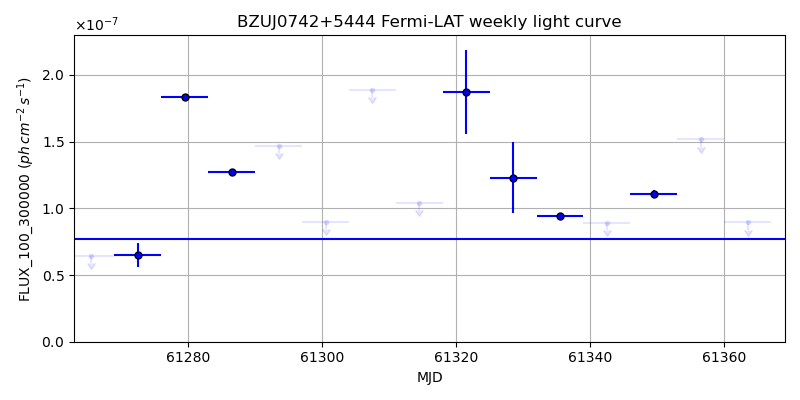

LAT Lightcurve site: https://fermi.gsfc.nasa.gov/ssc/data/access/lat/msl_lc/source/BZU_J0742p5444
NED: Query
Time of last update of this page: UT: 2026-11-28 16:19 (MJD: 61372.680)
| Property | Value |
|---|---|
| R.A. | 7:42:39.84 |
| Dec. | 54:44:24.0 |
| z | 0.720 |
| 3FGL SpectrumType | LogParabola |
| 3FGL PL Index | |
| 3FGL Flux_100_300000 | 7.70e-08 1 / (s cm2) |
| 3FGL Flux_1000_300000 | 5.28e-09 1 / (s cm2) |
| 3FGL Flux >200 GeV | 2.84e-12 1 / (s cm2) |
| 3FGL Extrap. Crab >200 GeV | 0.01 |
| 3FGL Flux After EBL Absorption >200GeV | 1.78e-13 1 / (s cm2) |
| 3FGL EBL Crab Fraction >200GeV | 0.00 |
| MJD | dMJD | Flux | dFlux | Frac3FGL | FracCrab>200GeV | EBLFracCrab>200GeV |
|---|---|---|---|---|---|---|
| 61367.50 | 0.50 | 2.50e-07 | 0.00e+00 | 0.00 | 0.00 | 0.00 |
| 61368.50 | 0.50 | 4.64e-07 | 2.61e-07 | 6.03 | 0.07 | 0.00 |
| 61369.50 | 0.50 | 6.12e-07 | 0.00e+00 | 0.00 | 0.00 | 0.00 |
| 61370.50 | 0.50 | 3.62e-07 | 0.00e+00 | 0.00 | 0.00 | 0.00 |
| 61371.50 | 0.50 | 4.56e-07 | 0.00e+00 | 0.00 | 0.00 | 0.00 |

| MJD | dMJD | Flux | dFlux | Frac3FGL | FracCrab>200GeV | EBLFracCrab>200GeV |
|---|---|---|---|---|---|---|
| 61335.50 | 3.50 | 9.42e-08 | 2.02e-09 | 1.22 | 0.01 | 0.00 |
| 61342.50 | 3.50 | 8.93e-08 | 0.00e+00 | 0.00 | 0.00 | 0.00 |
| 61349.50 | 3.50 | 1.11e-07 | 3.06e-09 | 1.44 | 0.02 | 0.00 |
| 61356.50 | 3.50 | 1.52e-07 | 0.00e+00 | 0.00 | 0.00 | 0.00 |
| 61363.50 | 3.50 | 8.96e-08 | 0.00e+00 | 0.00 | 0.00 | 0.00 |

| MJD | dMJD | Flux | dFlux | Frac3FGL | FracCrab>200GeV | EBLFracCrab>200GeV |
|---|---|---|---|---|---|---|
| 61367.50 | 0.50 | 4.54e-08 | 0.00e+00 | 0.00 | 0.00 | 0.00 |
| 61368.50 | 0.50 | 7.20e-08 | 0.00e+00 | 0.00 | 0.00 | 0.00 |
| 61369.50 | 0.50 | 3.14e-08 | 0.00e+00 | 0.00 | 0.00 | 0.00 |
| 61370.50 | 0.50 | 8.93e-08 | 0.00e+00 | 0.00 | 0.00 | 0.00 |
| 61371.50 | 0.50 | 1.90e-08 | 0.00e+00 | 0.00 | 0.00 | 0.00 |

| MJD | dMJD | Flux | dFlux | Frac3FGL | FracCrab>200GeV | EBLFracCrab>200GeV |
|---|---|---|---|---|---|---|
| 61335.50 | 3.50 | 1.18e-08 | 0.00e+00 | 0.00 | 0.00 | 0.00 |
| 61342.50 | 3.50 | 1.90e-09 | 0.00e+00 | 0.00 | 0.00 | 0.00 |
| 61349.50 | 3.50 | 1.02e-08 | 0.00e+00 | 0.00 | 0.00 | 0.00 |
| 61356.50 | 3.50 | 1.83e-08 | 0.00e+00 | 0.00 | 0.00 | 0.00 |
| 61363.50 | 3.50 | 3.26e-08 | 0.00e+00 | 0.00 | 0.00 | 0.00 |
--------------------------------------------------------- Using user-supplied coords: 7:42:39.84 54:44:24.0 2000 --------------------------------------------------------- FLWO UT night of: 2026-11-29 Local Sid. @ Midnight: 04:08 Sunset (-15.0) (local, UT): 18:31 01:31 Sunrise (-15.0) (local, UT): 05:53 12:53 Moonrise (local, UT): 21:57 04:57 Moonset (local, UT): Moon phase: 0.72 --------------------------------------------------------- AzTime LSID UT Obj_el Obj_az Mn_el Mn_az Sep. --------------------------------------------------------- 18:31 22:39 01:31 4.3 23.6 -32.9 32.1 37.9 19:01 23:09 02:01 7.0 27.0 -29.4 38.9 38.1 19:31 23:39 02:31 10.0 30.1 -25.4 45.0 38.2 20:01 00:09 03:01 13.3 32.9 -21.0 50.6 38.4 20:31 00:39 03:31 16.9 35.4 -16.2 55.6 38.6 21:01 01:09 04:01 20.7 37.7 -11.1 60.2 38.7 21:31 01:39 04:31 24.7 39.5 -5.4 64.5 38.9 22:01 02:09 05:01 28.8 41.0 0.4 68.5 39.1 22:31 02:39 05:31 33.1 42.1 5.8 72.2 39.2 23:01 03:10 06:01 37.4 42.7 11.6 75.8 39.4 23:31 03:40 06:31 41.7 42.8 17.5 79.4 39.5 00:01 04:10 07:01 46.1 42.2 23.6 82.9 39.7 00:31 04:40 07:31 50.3 40.7 29.7 86.5 39.8 01:01 05:10 08:01 54.4 38.3 35.8 90.3 40.0 01:31 05:40 08:31 58.2 34.5 42.0 94.4 40.1 02:01 06:10 09:01 61.6 29.1 48.1 99.1 40.2 02:31 06:40 09:31 64.3 21.7 54.2 104.7 40.4 03:01 07:10 10:01 66.2 12.3 60.1 111.7 40.5 03:31 07:40 10:31 67.0 1.5 65.6 121.1 40.7 04:01 08:10 11:01 66.5 350.5 70.5 134.7 40.8 04:31 08:40 11:31 64.9 340.7 74.0 154.7 41.0 05:01 09:11 12:01 62.4 332.7 75.2 181.1 41.1 05:31 09:41 12:31 59.2 326.8 73.6 206.8 41.3 05:53 10:02 12:53 56.5 323.6 71.0 221.2 41.4 --------------------------------------------------------- Dark hours >55 deg.: 0.00